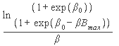

Paper Title :
A Contingent Valuation Approach to Estimate the Maximum
Willingness-to-pay for Improved Air Quality in Asansol,
Industrial Area of West Bengal
Abstract
Due to the industrialization, urbanization the pollution
of industrial area is increasing and as a consequence of it the
residents of that area are affected by some diseases. In this paper
we make survey report in Asansol as the industrialzone of West
Bengal.
Author:
Madhusree Dey
Department of Economics
Bidhan Chandra College
Asansol, West Bengal, INDIA
Paper Transcript of Paper Titled :
A Contingent Valuation Approach to Estimate the Maximum Willingness-to-pay for Improved Air Quality in Asansol, Industrial Area of West Bengal
A Contingent Valuation Approach to Estimate the Maximum Willingness-to-pay for Improved Air Quality in Asansol, Industrial Area of West Bengal
Madhusree Dey
Department of Economics
Bidhan Chandra College
Asansol, West Bengal, INDIA
Abstract—Due to the industrialization, urbanization the pollution of industrial area is increasing and as a consequence of it the residents of that area are affected by some diseases. In this paper we make survey report in Asansol as the industrial zone of West Bengal.
Keywords— Air Quality, Contingent Valuation Method,
Willingness to Pay (WTP), Willingness to Accept (WTA).
Introduction
Industrial area in several developing countries like India experience several levels of pollution viz. air pollution, noise pollution, water pollution etc. Governments of such countries allow economic growth at the cost of such pollution. The cost-benefit analysis plays an important role in order to maintain a balance between benefit gained from and the cost incurred for the improvement of environmental quality. To make such an analysis the benefits of improvement of health quality and life expectancy must be calculated in monetary terms. Although, remarkable studies are conducted in the developed countries to estimate the economic value of reducing risks of death and other adverse effect, yet a few of such studies have been found so far as developing countries are concerned. Generally the methods for analysis of cost-benefit approach applicable to developed countries are often taken as the granted models in the context of developing countries, despite of the difference in their social, economic, cultural and institutional backgrounds.
No doubt large-scale industrialization, modernization, urbanization, population growth lead to a satisfactory increase in the production of material goods but generate a significant adverse effects in the different forms of environmental problems. One of such problems is deterioration of urban air quality. In India like other developing countries, the levels of air pollution in urban areas often violate our national air quality standards for several pollutants. There is a positive association between public mortality and morbidity [1, 2, 3]. Epidemiological studies find a positive relationship between the concentration of air pollutants and adverse health effects. Air pollution allows some diseases like asthma, chronic bronchitis, eye irritation, skin disease etc. The main air pollutants are Suspended Particular Matter ( SPM ), especially Respirable Suspended Particular Matter ( RSPM/PM10 ), nitrogen Oxides ( NOx ), sulpher dioxide ( SO2). Hence, our government essentially require updating information about the costs and benefits related with the reduce levels of pollution to implement the policy control measures. Industrial’s utility depends on air quality and there exits an economic value of it. There are several method to measure the economic value of air quality viz. Dose-response approach, production function approach, revealed preference approach etc. In dose-response approach, it assumes a technical relationship between air quality and morbidity ( and/or mortality ) [ 2, 4]. It puts a price tag on air quality without retrieving people’s preferences for the good. The revealed preference approach assumes that the consumers are aware of the costs/benefits of air quality and accordingly they are able to adjust their locations to reveal their preferences. It is also assumed that the markets are perfects and consumers are perfectly informed in [ 5 ]. The health production function approach estimates the economic benefits from reduced morbidity due to reduction in air pollution. The household health production function and the demand function for mitigating activities are implicit in the utility maximization of an individual excluding non-use value of environmental amenity. In developing countries like India, markets are imperfect and consumers are not perfectly informed. Moreover, the above mentioned approaches do not incorporate the non-use values ( passive use values/existence values ) of the environmental good/service to estimate the total economic value ( use value + non-use value ) of it. Therefore to find out the economic value of an environmental amenity in demand assessment studies in the developing countries like India, Contingent Valuation Method ( C V M ) is more appropriate and widely used by the researchers in [ 6, 7, 8, 9, 10 ]. In this paper CVM is used to estimate the economic value on improving air quality in Asansol zone of West Bengal. It is an effort to estimate the residenets’ WTP to improve the air quality in the industrial areas of West Bengal, India. At the same time this exercise also helps us to find out the present attitude of the residents’ in the industrial zone towards environmental quality improvement and encourage the application of CVM in India. The rest of the paper describes the work in the following order:
section 2 provides a brief discussion on the literature review on CVM; section 3 describes a brief history of our survey area; section 4 makes a describtion of our survey format and questionnaire design; section 5 discusses the methodology used in this article; section 6 contains the descriptive statistics of variables used in our estimation and the econometric analysis of the determinants of WTP function, based on which maximum WTP can be determined; section 7 ends with conclusions and suggests some policy implications.
Literature Review on CVM
Air quality like other public good, non-marketed good/service face quantity rather than a price constraint. In developing countries like India, air quality can be treated as a luxury item which can be afforded only when adequate food, clothing and shelter are acquired. Therefore income effects due to a change in air quality provision undermines the consumer surplus of welfare changes. Hicksian compensating surplus ( CS ) ( i.e. the maximum WTP to ensure the improvement is occurred ) and equivalent surplus ( ES ) [ i.e. minimum WTA if the improvement does not occur ] could be used to measure the change in the level of welfare in quantity constrained utility function. Individuals WTP for improved air quality can be expressed in monetary terms with the help of consumers’ preferences. Consumer preferences can be expressed either using revealed or stated preference data. The 1st approach is based on the past experiences of the consumers’ whereas in latter, the economic value placed by an individual for a non-marketed good/service is contingent upon a hypothetical scenario i.e. presented to the respondents for valuing where in the hypothetical market the good/service can be traded. The contingent market can be defined as the market in which both the good is provided and the way it is financed. Hence we consider the maximum WTP for the good/service by the corresponding respondents. Since the elicited WTP values are contingent upon the particular hypothetical market describes to the respondents, this approach is to be called CVM. In CVM maximum WTP are asked to the respondents and that can be derived in several ways:
Open Ended Question Format CV studies use open ended question format: The respondents are asked for their maximum WTP but no value being offered to them. The individuals have often found difficulties to answer such questions, especially where they have no previous experience of trading with the commodity in question. Least square regression is used to estimate the WTP under open-ended CVM. Closed Ended Referendum Question Format-- A single payment is offered to which respondents may agree or disagree [ Yes/No reply ]. Such responses are known as ‘dichotomous choice’ ( DC) responses. As compare with other it is difficult because analyst is unable to know a particular sum ( offer-price ) that cannot be revealed through respondents’ WTP. But it is advantageous for the respondent to consider the suggested price option, particularly in case of non-marketed goods. Another important reason for using closed ended format is that strategic biases in the responses can be better controlled. Their binary forms of dichotomous choice adopts a random utility function. In this case, the coefficient values can be estimated by using a binary logit or probit model by applying the maximum likelihood method. The NOAA ( National Oceanic and Atmospheric Administration ) experts panels in 1993 [ 11 ] came out strongly in favour of using Dichotomous choice questions. Again in double-bounded referendum question format present those respondents who say ‘no’ to the first amount with a lower amount and those respondents who say ‘yes’ to the first amount with a higher amount. Another option is to apply a payment card voter referendum or sequential referendum method in which a range of values on a card is presented that indicates the typical expenditure by the respondents for a given income-group or other publicly provided services. In this method the respondent gets the opportunity to vote on a single offer amount. The respondent is asked to indicate the maximum WTP from an ordered set of values say ranging from ‘0’ to ‘B’ or more. This approach undoubtedly increase the valuation efficiency but simultaneously arises a greater difficulty in the estimation of distribution and endogeneity problem in the follow-up question as well. In CV literature parametric or non-parametric techniques are often used in the estimation of the distribution of WTP function. Non-parametric estimations are nothing but a set of techniques which can be applied to estimate a WTP function to find out its mean and median without assuming its nature of WTP data and that can be obtained by doing simplest numerical calculation. The main disadvantage of non-parametric approximation is that it does not allow a conditional analysis. Another estimation of the distribution of WTP function is carried out in the literature with parametric techniques. In this approximation the analyst assumes that a WTP function is distributed in the population according to some probability distribution. Once a probability distribution is chosen the researcher can be able to estimate the parameter of the model. Once a parametric model of WTP has been estimated mean, median of WTP can be calculated. A parametric model represents the relationship between the WTP and the consumers’ intrinsic characteristics. The main advantages of the parametric model are that it is relatively easy to impose preference axioms combine experiments and extrapolate the calculations to different population without constraining exclusively to the sampled population in [ 12 ]. In our case study we would like to apply the logit model to estimate the parameters of the WTP function. Literature on CVM mainly focused on the conditional analysis of WTP. In this case our main goal is to find out the conditional relation of WTP and its determining factor ( say ‘X’ ) which describes consumers’ characteristics. CVMs are used in different grounds mostly in developed countries. But so far the developing countries are concerned, only a few attempts are taken in using CVM. In developing countries CVM is used in two major fields–water supply and sanitation in [ 13, 14, 15 ]; tourism recreation, heritage and National Parks in [ 16, 17, 18 ]; water quality [ 19 ]; health in [ 20, 21, 22 ]; social forestry in [ 23 ] and telecom services in rural areas in [ 12 ]. Main notable works on CVM used in this area of air quality measurement can be stated here are–one in Beijing, China [ 9 ]. Their main objective is to estimate and assess WTP to improve air quality in the urban area of Beijing. Their mean WTP for a 50% reduction of harmful substances in the air was 143CNY per household per year; and total WTP at the resident in the study area was 336 million CNY per year. The mean WTP expressed as a proportion of household annual income was amounted to 0.7%. In India Kumar estimated WTP for air quality improvement at Panipath Thermal Power Station ( PTPS ) colony, Panipath, Hariyana, India [ 10 ], with the help of CVM. They found that health status and bid values are two important factors in determining WTP function. Their results revealed that people in PTPS colony were WTP about 2% of their monthly income for an improvement of their air quality programme. Whereas, Professor James K. Hammitt [ 24 ] related the economic value of presenting adverse health effects to air pollution in three different locations ( Beijing, Anquing and rural areas surrounding Anquing ) in China. They include 3 different end points: colds, chronic bronchitis and fatality. Their data were mainly used to investigate the relationship between WTP to reduce health risk and air quality. By using CVM their sample average median WTP lies between US$ 500 and US$1,000 to prevent chronic bronchitis. The value per statistical life ranges between US$4,000 and US$17,000 and value of median WTP to prevent cold range between US$ 3 and US$ 6. Estimated mean values are between 2 and 13 times larger to prevent fatality.
A Brief History of the Survey Area
Asansol is an important city in Bardhaman district of West Bengal, India. We shall discuss the development of Asansol from different angles as follows:
A. Asansol Administration
In 1906, Asansol became as the subdivision of Bardhaman. In 1910, there were five police stations viz. Asansol, Raniganj, Kanska, Faridpur and Barakar. After the change in 2006, the Asansol subdivision was constituted with Chittaranjan, Salanpur, Baraboni, Asansol ( North ), Asansol ( South ), Raniganj, Jamuria, Hirapur and Kulti police stations. For looking after the civic needs at Asansol a union committee was formed in 1850. Although the Asansol municipality was approved in 1885, but it started its function in 1886. In 1991 Asansol was upgraded to the status of a corporation. The corporation situated between two rivers— Damodar and Ajay. Another river Barakar joins the Damodar near Dishergarh. Dhanbad district of Jharkhand is on the western side while Durgapur subdivision of Bardhaman district of West Bengal is on the eastern side of Asansol. To the south across the Damodar river are Purulia and Bankura district whereas Dumka and Bhirbhum district are on the north side of Asansol.
B. Agriculture in Asansol
Agriculture is one of the other main industries in Asansol. The main crops grown in and around Asansol is the rice which is the principal food of this region. Other commonly grown crops are pulses, oil seeds, wheats, potatoes and variety of different types of green vegetables.
C. Industries in Asansol
As the second largest city in West Bengal, Asansol is known for being the ‘coal mining city’ as the entire region of Asansol sits on layers and layers of coal. The coal is of high quality superior coal. Although economy of Asansol is based on the coal industries, yet there are some other important industries have also developed. Some of them are: Indian Iron and Steel Company ( IISCO ), Burnpur Cement Limited ( BCL ), Dishergarh Power Supply Company limited, Joy Balaji Sponge Iron Private Limited, Shyam Gel Limited ( Power Divisions ) etc. In Asansol the ambient air quality has rapidly deteriorated due to mainly for industrialization, modernization and urbanization. In 2010 the total population in Asansol is 486304 (as per as 2001 census). 53% of this population are male and the rest i.e. 47% are female. 73% of total population of Asansol are literate which is higher than the national average of 59.9%. 57% of male and 43% of female are literate. The number of vehicles are also arising. In our survey area industrialization and transport vehicles are two major sources of pollutants. Table-I shows the ambient pollutant levels– Nitrogen Dioxide ( NO2 ), Carbon Monoxide ( CO ) and particulate matters less that 10 μg ( PM10 ) was violating the National Ambient Air Pollution Control Board for the residential areas since Indian coal has high contain of ash. That is why we can say that the widespread critically of PM10 is the main cause of deteriorating air quality and the households living in the industrial belts are suffering due to air pollution.
- Information About the Ambient Pollutant in Asansol
Time |
SO2 |
NO2 |
PM10 |
November, 2009 |
90 |
56.3 |
178 |
December, 2009 |
109 |
76.2 |
300 |
April, 2010 |
90 |
73.8 |
137 |
National standard |
80 |
80 |
100 |
Source: CEPI, West Bengal
Survey Format and Questionnaire Design
The survey was conducted from August, 2009 in Asansol and carried out up to May, 2010. CV was conducted in persons for 242 households. In our survey study questions are asked to the respondents in face-to-face interview rather than telephonic conversation or mail survey [ 11 ] recommended in person’s interview as compared with the other two methods to achieve contingent values. The questionnaire was pretested through a series of selected group interviews conducted in the field. The pretested survey helped us to design the final questionnaire in such a fashion so that questionnaire was logistically sound and the WTP questions were easily understood by the respondents.
The final questionnaire consisted of the following parts:
- Demographic Features,
- Monthly Income,
- Health Stock Measures,
- Expenses for Medical Treatment,
- Question Connected with Environmental Awareness,
- Contingent Valuation Questions ( the WTP of the respondent to improve the air quality in Asansol ).
In the first part of questionnaire design the respondents are faced six questions and they are: Age, Gender, Marital status, Residential area, Educational background and Occupation. In our sample a small portion of respondents’ are belonging to rural background. Most members of the sample are married persons. Monthly income is considered here as the total income from salary ( if any ) and other source of incomes ( viz. income from rent, interest received from the savings, income from business, agriculture etc. ). The third category of questions is related to health stock measures where health is a multidimensional rather than one dimensional variable. In our survey health stock contains three types of variables (a) health status ( whether health is excellent, very good, good and poor ), (b) existence of diseases and if yes its name and (c) duration of diseases in case of chronic diseases and its name. The fourth category is related with the question of expenses for medical treatment. The respondents is asked whether a doctor usually visit during a month, if yes, the number of month visits. In the next part the environmental awareness questions are set to understand the general attitude and awareness of the respondents. The question related with it are: (a) environmental awareness ( highly aware, aware, awareness to some extent, totally ignorant ); (b) causes of the above stated diseases, if any (pollution related, lack of proper facility, excessive work load, any other); and (c) the adoption of any environmental safety measures with a yes/no type question. In the last section of the questionnaire the respondents are asked CV questions in the form of dichotomous question format. A particular bid value is offered to a single respondent and he/she has two options either to agree or disagree corresponding to this bid value for improved air quality. At the same time we remind the respondents that they have less amount of money available for the expenditure on other necessary as well as luxury items, if he/she is willing to pay the amount for the improvement of the air quality, although nothing is changed at present. Here we use different photographs, blue prints etc. to make understand CV questions to the respondents. With this extra revenue earned by the government, they can use by purchasing equipments for pollution control and make it mandatory to the company to use them. At the same time, less pollution created modern vehicles and motors can be provided by the government to reduce the deteriorating air quality generated by the motor vehicles. At the same we take care of the duration of time for each interview. Because if interview is lengthy, the interviewee may become bored and lose patience with answering the question. Again if an interview is too short, the interviewee may not have enough time to understand the information provided and think carefully about their answers. In the 'pre-test' survey, length of the interview was tested and accordingly the interview was limited to about 15--20 minutes. When we state about the WTP for improved air quality, it implicitly includes the value of several benefits from reduction in damage costs like the avoidance of diseases due to air pollution along with their related costs ( lost of working hours, lost of leisure time, expenditure on defensive behaviour and treatment cost as well ). At the same time when the respondents are WTP for improved air quality, they are ready to sacrifice some other uses of their present income. The respondent was made aware of these aspects in creating the appropriate hypothetical market. The respondents are also awaken against free riding, as the good to be valued was a public good. As CVM is not free from criticism and suffering from different biases, we have tried our best to minimize these biases. To minimum hypothetical bias at the time of interview we reminded the respondent that they have limited income which has alternative uses. If they agree to pay for the improvement of air quality they would have less money for expenditure. To avoid anchoring bias we offer those 'bid' values in our final survey which are selected on the basis of the information gathered from our pilot survey. So far as embeddedness is concerned we clearly mentioned that the respondents are asked to express their maximum WTP for getting better air quality in Asansol zone only and not for other places. In order to reduce strategic bias we take those observations in our final survey which are consistent with their corresponding income, education level, awareness about environment, health status etc. Other inconsistent observations ( may create outliers ) are dropped from our final sample. In case of open-ended and bidding game elicitation format possibilities of anchoring bias and strategic bias will be high. We therefore are not interested to apply them in our CVM execution. Again payment card elicitation format is very difficult to apply in case of heterogeneous income group and it is not very much popular. That's why in our case study we choose single bounded dichotomous choice ( DC )type of question format. Our pilot survey had also revealed that majority people accept monthly reduction through electricity bill as a mode of payment vehicle.
methodology
In our case study we adopt single bounded DC type of question elicitation format. A particular bid value 'B' offered to a respondent. The response may be either 'yes' or 'no'. That is our dependent variable can take only two values: '1' for yes and '0' for no. That's why it is called a binary dichotomous variable. If the response is 'yes' then the investigator knows B ≤ max. WTP, if 'no' then But the drawback of the format is that no concrete information is available to pin down the exact value of max. WTP. In spite of that limitation we adopt this method as it provides the best results against stragegic bias. But in estimation procedure partial observability possesses a serious constraints. The problem in this regard is that although respondent can fully recognized his/her preferences through the utility function but researcher can observe only a part. That's why consumers' utility function can be split up into two parts –(I) an observable deterministic component and (II) unobservable random error term. Therefore a Random Utility Model ( RUM ) is chosen to represent the choice decision where the only objective is to find out the probability of 'yes' response to a bid. It can be derived by applying logit or probit estimation. In our case study we assume that the error term follows the logistic distribution and the probability of saying 'yes' response can be totally explained in terms of our given households' characteristics. Therefore it is rational to apply conditional logit regression [ 25]. The model used in our study is briefly given below:
Uh = Uh(Xh,Q0); h = 1, 2, · · ·N,where
Uh : utility of the ‘h’th household,
Xh: An N×1 vector of the private goods
consumed by the h-th household,
Q0: Air quality, an environmental amenity
( an non-marketed good ).
Therefore, the individual’s problem becomes:
Max.: U = Uh(Xh,Q0) · · · · · · · · · ( 1 )
Subject to: a fixed income M and vector prices for all other goods and services and exogenously determined level of the environmental good Q0.
Mathematically, the maximization problem can be stated as–
Uh(Xh,Q0) | M ≥ PX; Q0 is preassigned ].
The ‘dual’ to the problem of utility maximization is cost minimization. Therefore, the dual problem becomes-
Minimize: expenditures
subject to: a constraint of fixed level of utility and
environmental good/service.
Mathematically,
e(P,Q0,U) =[PX | U ≤ U(X,Q0); Q0 is preassigned] · ·
· · · · · · (2)
where e(P,Q0,U) is the expenditure function.
And the minimum expenditure is necessary to achieve the fixed level of utility U, dependent on prices and the level of Q.
Hence, WTP = WQ = −· · · · · · · · · (3), where WQ is the reduction in the income i. e. sufficient to maintain utility at its level corresponding to no improvement in the air quality. The maximum WTP for an improvement of the air quality can be expressed in terms of compensating surplus ( CS ) for measuring the welfare change by using expenditure function that can be stated as follows:
WTP = e(P,Q1,U, Sh) − e(P,Q0,U, Sh) · · · · · · · · · ( 4 ), i.e. the difference between the two levels of minimum expenditure to achieve fixed utility U , where Q1 ≥ Q0 ; P is the price vector, Sh is the vector of socio-economic characteristics of the h-th household. If the reference utility is the utility that household gets with polluted air, then it is the difference in the minimum expenditure required the household to be as well off with the unpolluted air as it was with polluted air. Given the equation ( 4 ), if the h-th household will say ‘yes’ to a specific bid value 'B' if WTP(P, Q1 , Q0 , U , Sh ) ≥ B · · · · · · · · · ( 5 ) and ‘no’ otherwise.
The probability P of accepting the bid related to the air quality Q will be P(Yes) = P( B − WTP < ε ) · · · · · · · · · ( 6 ), where ‘ε’ is the unobserved random component of WTP function. It could be logistically or standard normally distributed. If ‘ε’ is assumed to be distributed logistically it becomes a logit model.
The probability of an affirmative response to the bid value ‘B’, where the household has a vector X of explanatory variable is
P(Yes/X) = · · · · · · · · · ( 7 ).
Maximum likelihood estimation ( MLE ) can be applied to estimate the logit model.
Once the logit model is estimated, the cumulative distribution function ( cdf ) can be identified by these estimated parameters. For the logit model due Hanemann [ 26, 27 ] and Vaughan [ 28 ] provided the WTP formula for the unrestricted expected values, the median and truncated expected value that restricts WTP to be positive.
- Central Tendency Measures Formula, Bmax is the maximum ‘bid’
Description |
Symbol |
Formula |
Mean E(WTP) |
C+ |
|
Median WTP |
C0 |
|
Truncated Mean E(WTP) |
C1 |
|
Truncated Mean E(WTP) |
C2 |
 |
Table II describes the different central tendency measures for the probability model. Following the notations used by Hanemann [ 26, 27 ], letter ‘c’ in the table II is abbreviation to identify the measure at the central tendency of WTP. Β0 is known as an augmented intercept or equivalent to the intercept coefficient parameters ( i = 1, 2, · · · n ) [ except the bid parameter B]; multiplied by the sample mean of the explanatory variables X.
Descriptive Statistics of Variables Used in our Estimation and econometric analysis of the determinants of wtp function
The survey uses data obtained from 242 interviews in Asansol zone of West Bengal in India. To find out consistent parameters, this exercise applies non-linear estimation method the logit model which includes the random sampling. Every respondent was asked whether he or she is willing to pay a particular bid value. That means he has only two options either agree or disagree against a particular bid value. In this case the discrete dependent variable takes the value 1 if the bid is accepted by the respondent, otherwise, it takes the value 0. The data entering method includes the problems of correlation among the errors of each household. This kind of problem can be overcome with a straight forward procedure consistent with the bootstrapping literature. Two categories of run can be applied here. One is the point estimates of the parameters from a model can be estimated that used all the data. To estimate the true z-statistic of these estimates, one observation was chosen randomly from every group of observation for each household and thereby helped to reduce the sample to the number of respondents. This procedure was followed 8 times; the reported values for the z-statistics depend on the average values of z-statistics from these 8 runs. The table III provides the necessary descriptive statistics and definitions of major variables. The estimated parameters of the logit model are expressed in terms of table IV. Table IV shows that so far as the demographic variables are concerned, some of them have significant influence on WTP and they are households' income, status of occupation and existence of diseases. WTP rises with the rise in income, occupational status and existence of diseases. The WTP of residents also have positive relationship with environmental awareness of the respondents. As the value of environmental awareness increases the WTP decreases, in our questionnaire it is a self reporting index ranges from 1-- 4. For this result the coefficient of environmental awareness is negative. Table IV also shows that the adoption of safety measures against pollution is highly significant and it has a direct relationship with WTP. Again, table IV reveals that the two parameters health status and bid value are statistically significant. The coefficient of health status is positive and statistically different from zero at 0.05 level. As health status is a self reporting index ranging from 1- 4, the respondents indicates the value 1 if they have excellent health status and the value increases as the quality of health status decreases. This means that the probability of acceptance of higher bid value is positively related with the decrease in the self reported health status. The coefficient of the bid value is negative and statistically significant at the 0.01 level. This implies that probability of acceptance of the bid is inversely related with the bid value. The lower the value of the bid the higher will be the probability of acceptance. It is difficult to compare the results obtained in the study with the previous ones since the CVM has been rarely applied in India. The main objective of this study is to use CVM for the estimation of the maximum WTP of the respondents of Asansol zone of West Bengal ( an industrial belt ) in India for their improved air quality. Table V reports the estimates of households WTP in our survey area. In this case we use Hanemanns formulae to find out WTP estimates for the untruncated mean, median, the mean truncated at zero but untruncated from above but the truncated mean lies between zero and maximum bid value. The expected WTP varies between Rs. 66.47 per month per household ( untruncated mean/median ) to Rs 89.56 per month per household ( between zero and maximum bid value ). The expected mean/average value of WTP is Rs.78.87 per month per household when the mean is truncated at zero but untruncated from the above mean. The variation of benefits expresses the fact that we cannot conclude a single number which represents WTP of the respondents for the improvement of the air quality. But the net benefits of improved air quality remain positive irrespective of the measure of the central tendency. Although the income of the people of survey area is less as compare with that of developed countries, they are aware of the environmental pollution. They are also conscious to protect our environment from pollution. The main reasons for not paying are as follows: willing but have poor income (37.25% respondents not WTP), less important issue compare to other seriour problems (17.38%), government should pay (15.17%), polluting industries should pay (21.32%), rich section should pay (06.78%) and others (02.1%). the main reasons for paying are: to aviod illness episodes (37.33% respondents WTP), duty to protect our enviornment (30.14%), protection required for the future generation and/or for future use (31.6%), payment should be mendatory (0.93%).
- Descriptive Statistics of the Major Variables Used in the Study
Names of the variables |
Description of the variables |
Mean of the variables |
Median of the variables |
X1 (age) |
<20:1, 21-40:2, 41-60:3 >60:4 |
2.6281 |
7850 |
X2 (gender) |
Male: 2, female:1 |
1.7603 |
0.4278 |
X3 (marital status ) |
Married:1, single: 2 |
1.1198 |
0.3254 |
X4 (residential background) |
Rural: 1, urban: 2 |
1.6074 |
0.4893 |
X5 (educational background ) |
No formal :0, Primary:1, Secondary:2, Higher Secondary: 3, College: 4, University: 5 |
3.0785 |
1.3288 |
X6 ( occupation ) |
Retired: 0, house wife: 1, service: 2, business: 3, private practitioner: 4, student: 5, |
0.1322 |
1.4910 |
X7 (monthly income) |
<5,000: 1; 5-15: 2; 15-25: 3; >25 :4 |
2.3347 |
0.9595 |
X8 (health status) |
Excellent:1, very good: 2, good:3, |
2.6364 |
0.9245 |
X9 (existence of diseases ) |
Yes:1, no: 0 |
0.5041 |
0.5010 |
X10 (medical treatment ) |
Yes: 1, no: 0 |
0.4256 |
0.4955 |
X11 (environmental awareness) |
Highly aware: 1, average aware: 2, some extent: 3, ignorant: 4 |
2.6033 |
0.8688 |
X12 ( causes of diseases ) |
Pollution related: 1, lack of facilities: 2, excessive work load: 3, otherwise: 4 |
3.0289 |
0.9397 |
X13(safety measure) |
Yes:1, no: 0 |
0.5124 |
0.5009 |
X14 |
Yes:1, no: 0 |
54.6694 |
28.8955 |
Total number |
242 |
||
- Multivariate Models of the Determinants of Household's WTP for Air Quality Improvement
Variable |
Coefficient |
Sig. |
Constant |
-3.5398 |
0.4455 |
X1 (age) |
0.6236 |
0.3102 |
X2 (gender) |
-2.3358 |
0.0706*** |
X3 (marital status) |
1.0585 |
0.5552 |
X4 (residential background) |
0.1070 |
0.8997 |
X5 (educational background) |
0.0325 |
0.9365 |
X6 (occupation) |
0.8468 |
0.0407** |
X7 (monthly income) |
4.5120 |
0.0002* |
X8 (health status) |
0.7396 |
0.0247** |
X9 (existence of diseases) |
4.2318 |
0.0050* |
X10 (medical treatment) |
1.6624 |
0.1469 |
X11 (environmental awareness) |
-2.3279 |
0.006* |
X12 (causes of diseases) |
-0.8675 |
0.1679 |
X13(safety measure) |
3.1434 |
0.0012* |
X14 (bid value) |
-0.0920 |
0.001* |
Loglikehood |
-166.3422 |
|
Degrees of freedom |
14 |
|
Note: ‘*’ indicates significant at 1% critical level whereas
‘**’ indicates significant at 5% critical level. The ‘***’
indicates significant at 10% critical level.
- Estimation of Expected Willingness to Pay (WTP)
Description |
Symbol |
WTP |
Mean E(WTP) |
C+ |
Rs.66.47 |
Median WTP |
C0 |
Rs.66.47 |
Truncated Mean E(WTP) |
C1 |
Rs.78.87 |
Truncated Mean E(WTP) |
C2 |
Rs. 89.56 |
Conclusion and policy implication
In this exercise our objective is to apply CVM to estimate maximum WTP of the respondents in Asansol zone of West Bengal, India ( an industrial belt ) for their improved air quality in monetary terms. In this way, we make an attempt to verify the economic rationale of air quality preservation. The benefits of the respondents in our study area are estimated and estimates ranges from Rs.66.47 per month to Rs 89.56 per month per household for untruncated mean/median to truncated mean. Although the use of CVM in the valuation of environmental goods and services in India is rare, we are optimistic about the potential application of this method. Our study suggests that the use of CVM in developing countries like India can be both practical, feasible, logical as well as reliable data could be obtained via proper questionnaire design and survey execution. Although more studies are required on CVM to get comparable data and better practice in India. But we are still doubtful to measure the accurate benefits of the environmental improvement due to the existence of uncertainty, yet this study concludes with the remark that CVM is a useful and flexible technique for the planners and policy makers in their decision making. But it should be note worthy to mention that each particular CV format must depend on the situation and the location, so that proper and successful estimated value of the environmental amenity can be attained. Moreover, this analysis ensures a fact that the respondents in our study area are well conscious about the air pollution problems. They think that they have lost valuation of health benefits because of the air pollution and accordingly they are willing to pay for the improvement of the air quality. Our hope is that this work provides important policy relevant information for enhancing air pollution abatement investment in the Asansol zone of west Bengal in India. Thus the findings of our study support our received wisdom 'protect now, before it is too late'.
Acknowledgment
The author is thankful to anonymous referee for their valuable suggestions to improve the article. The author is also thankful to the University Grants Commission ( U G C ) as UGC Minor Research Project No. F. PHW-004/08-09(ERO) towards the financial support to complete the work successfully. Insightful views and valuable advices of Dr. Soumyendra K. Dutta, Dr. Baidyanath Ghatak and Prof. Dipak K. Mandal are greatfully acknowledged.
References
- A. Krupnick, W. Harrington and B. Ostro, 'Ambient ozone and acute health effects: evidence from daily data', Journal of Env. Eco. And Management, 18(1), 1--18, 1990.
- M. Cropper, N. Simon, A. Alberini, S. Arora and P.K. Sharma, 'The health benefits of air pollution control in Delhi', American Journal of Agr. Ecos. 79(5), 1625--1629, 1997.
- S. K. Chhabra, J. N. Pande, T. K. Joshi and P. Kumar, ;Air quality and health' paper presented at th workshop on Land Use, Transport and the Environment, Pune, India, December 3--4, 2001, http://www.deas.harvard.edu./ Transportasia/workshop_papers/ChhabraetalFinal2.pdf
- S. Kumar and D. N. Rao, 'Valuing benefits of air aollution abatement using health production function: A aase study of Panipat thermal power station, India', Env. and Resource Ecos. 20, 91--102, 2001.
- A. M. Freeman, 'The measurement of environmental and resource value: theory and methods, Washington DC: Resources for the Future, 1993
- I. Bateman and K. G. Willis (Eds.), Valuing Environmental Preferences: Theory and Practice of the Contingent Valuation Method in the US, EU, and Developing Countries, Oxford Univ. Press, New York, 1999.
- J. K. Ahmad, B. N. Golder, M. Jakariya and S. Misra, 'Willingness to pay for arsenic free, safe drinking water in rural Bangladesh-- methodology and results', report water and sanitation Programe-south asia, Dhaka, Bangladesh, 2002.
- R. C. Ready, J. Malzubris and S. Senkane, 'The relationship between enviornmental values and income in a transition economy: Surface water quality in Latvia', Env. and Dev. Ecos., 7(1), 147—156, 2002.
- X. J. Wang, W. Zhanh, Y. Li, K. Z. Yang and M. Bai, 'Air quality improvement estimation and assessment using contingent valuation method: a case study in Beijing enviornmental monitoring and assessment, 120, 153--168, 2006.
- S. Kumar and D. N. Rao, 'Willingness to pay estimates of improved air quality: a case study in Panipath Thermal Power Station Colony, India, http://dx.doi.org/10.2139/ssrm.910828
- K. Arrow, R. Solow, P. R. Portney, E. Learmer, R. Radner and H. Schuman Report of the NOAA Panel on Contingent Valuation. Washington, DC: National Oceanic and Atmospheric Administration, US Department of Commerce, 1993.
- M. Torero, S. K. Chowdhury and V. Galdo, 'Willingness to pay for the rural telephone rervice in Bangladesh and Peru', Infor. Ecos. and Policy 15, 327--361, 2003.
- D. Whittington, M. Mujwahuzi, G. McMahon and K. Choe, Willingness to Pay for Water in Newala District, Tanzania: Strategies for Cost Recovery. Water and Sanitation for Health Project Field Report No. 246, Washington DC: USAID, 1988.
- D. Whittington and V. Swarna, The economic benefits of potable water supply projects to households in developing countries, Economics Staff Papers 53, Asian Development Bank, Manila, 1994.
- J. McConnell and J. Ducci, Valuing Environmental Quality in developing Countries: Two Case Studies, Paper presented at the Applied Social Science Association, Atlanta, GA, 1988.
- S. Grandstaff and J. Dixon, Evaluation of Lumpinee Park in Bangkok. in Economic Valuation Techniques for the Environment: A Case Study Workbook, ed. J. Dixon and M. Hufschmidt. Baltimore: Johns Hopkins University Press, 1986.
- P. Shyamsundar and R. Kramer, 'Does Contingent Valuation Work in Non-Market Economies?' Center for Resource and Environmental Policy, Duke University, Durham, NC, 1993.
- M. Dutta, S. Banerjee and Z. Husain, 'Untapped demand for heritage: a contingent valuation study of Prinsep Ghat, Calcutta', Tour. Manag. 28, 83—95, 2007.
- K. Choe, D. Whittington, and D. T. Luria, 'The economic benefits of surface water quality improvements in developing countries: A case study of dauao philippines' Land Economics 72, 519-537, 1996.
- A. Alberini, C. Cropper, T. Fu, A. Krupnick, J. Liu, D. Shaw and W. Harrington, 'Valuing health effects of air pollution in developing countries: The case of Taiwan', Journal of Env. Ecos. and Manag. 34, 107--126, 1997.
- A. Alberini and A. Krupnick, 'Cost of illness and willingness to pay estimates of the benefits of improved air quality: evidence from Taiwan', Land Economics 76, 37--53, 2000.
- S. H. Yoo and K. S. Chae, 'Measuring the economic benefits of the ozone pollution control policy in Seoul: results of a contingent valuation survey, Urban Studies 38(1), 49--60, 2001.
- G. Kohlin, 'Contingent valuation in project planning and valuation: the case study of social forestry in Orissa, India,' Env. And Devep. Ecos., 6(2), 237--258, 2001.
- Hammitt, 'Valuation of the risk of SARS in Taiwan', Health Econs. 14(1), 83—91, 2005
- G. S. Maddala, Limited Dependent and Qualitative Variables in Econometrics Cambridge: Cambridge University Press, 1983 .
- W. M. Hanemann, 'Welfare valuation in contingent valuation experiments with discrete responses' Amer. Jour. of Agri. Ecos., 66, 332—341, 1984.
- W. M. Hanemann, 'Welfare evaluation in contingent valuation experiments with discrete response data: Reply.' Amer. Jour. of Agri. Ecos. 71, 1051--1061, 1989.
- W. J. Vaughan, C. S. Russell, D. J. Rodriguez and A. H. Darling, 'Willingness to pay: referendum contingent valuation and uncertain benefits' Sustainable Development Department Technical Papers Series, Inter-American Development Bank, Washington, DC, 1999.
- AUTHORS PROFILE
- Professor Madhusree Dey, Assistant Professor in Economics, Bidhan Chandra College, Asansol, West Bengal, India, 713 304,